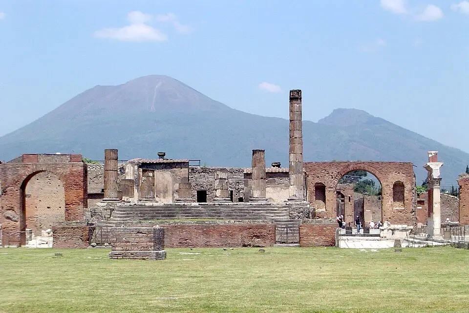
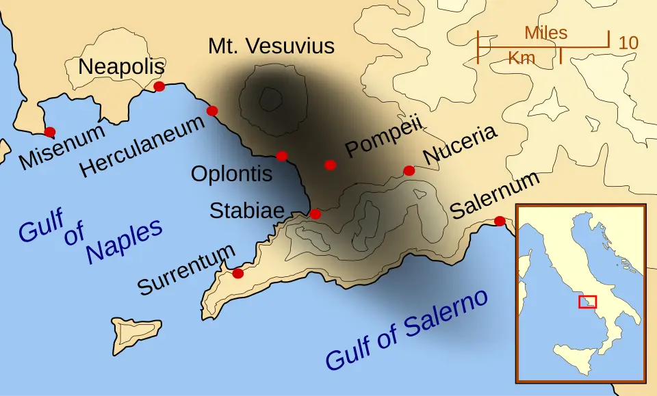
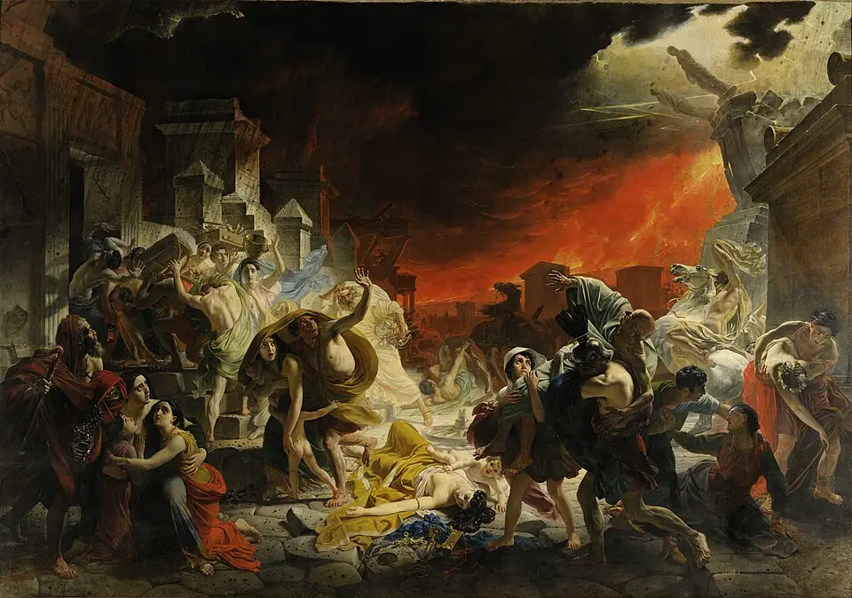
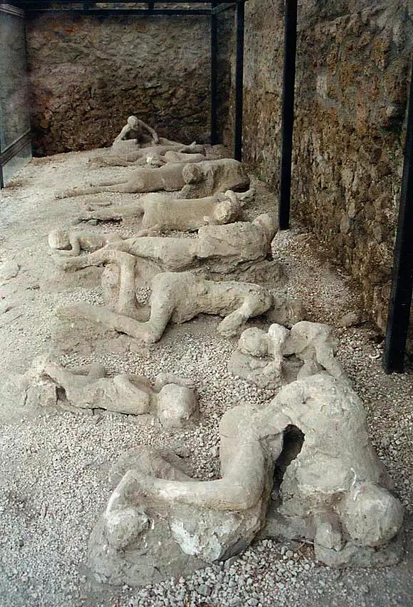

Pompeii: thành phố bị chôn vùi trong một ngày
Năm 79, núi Vesuvius chôn vùi Pompeii và Herculaneum. Nhân chứng duy nhất để lại lời kể là một chàng trai 17 tuổi đứng bên kia vịnh, và anh không hề nhắc tới Pompeii.

Mấy ngày trước khi núi Vesuvius phun trào, vùng vịnh Naples rung lên vì những trận động đất nhỏ. Không ai lo lắng. Nhiều năm sau, Pliny Trẻ giải thích rằng chúng “không đáng sợ lắm vì thường xảy ra ở Campania”. Rồi một buổi đầu giờ chiều năm 79, một cột tro và đá bọt vọt lên trời. Hai ngày sau, các thị trấn Pompeii và Herculaneum biến mất dưới nhiều mét tro, và chỉ còn lại lời kể của một người.
Những lời cảnh báo bị bỏ qua
Ngày 5 tháng 2 năm 62, một trận động đất lớn tàn phá vùng vịnh, nặng nhất là Pompeii. Đến năm 79, một số chỗ hư hại vẫn chưa sửa xong. Năm 64 lại có một trận nhỏ hơn. Suetonius chép rằng hoàng đế Nero, khi đó đang biểu diễn ở Naples, vẫn hát tiếp cho đến hết bài. Tacitus thì viết rằng nhà hát sập ngay sau khi khán giả ra hết.
Pompeii lúc ấy là một thị trấn giàu có, khoảng 10.000 đến 20.000 dân. Tổng dân số của Pompeii và Herculaneum hơn 20.000 người.
Những tư thế co quắp của nạn nhân không phải dấu hiệu của cơn hấp hối kéo dài, mà là hiện tượng co cứng tử thi do sốc nhiệt.
Hai ngày của núi lửa


Ngày đầu, cột phun trào lên cao tới khoảng 33 km, phun ra khoảng 1,5 triệu tấn đá bọt và tro mỗi giây. Gió đẩy tro về phía đông nam. Trong 18 đến 20 giờ, một lớp đá bọt dày khoảng 2,8 m phủ lên Pompeii, làm sập mái nhà. Đó có lẽ là cơ hội cuối cùng để chạy trốn.
Sáng sớm ngày thứ hai, cột tro sụp xuống thành những dòng khí nóng và tro cuộn xuống sườn núi. Hai đợt như vậy quét qua Pompeii. Theo các nghiên cứu sau này, đợt đầu tiên đến thành phố nóng khoảng 300 độ C, đủ giết người trong tích tắc. Những tư thế co quắp của nạn nhân không phải dấu hiệu của cơn hấp hối kéo dài, mà là hiện tượng co cứng tử thi do sốc nhiệt. Herculaneum, gần miệng núi hơn, bị vùi dưới khoảng 23 m vật liệu.
Hai lá thư gửi Tacitus


Pliny Trẻ, 17 tuổi, đang ở Misenum, cách núi lửa khoảng 29 km bên kia vịnh. Khoảng 25 năm sau, ông viết hai lá thư cho sử gia Tacitus. Ông tả đám mây giống một cây thông, thân dài vút lên rồi tỏa thành cành. Ông kể cảnh dắt mẹ chạy khỏi thị trấn, phải liên tục rũ tro để khỏi bị vùi.
Người cậu của ông, Pliny Già, chỉ huy hạm đội La Mã ở Misenum. Ông nhận được tin nhắn cầu cứu từ một người bạn tên Rectina, sống dưới chân núi, và cho thuyền chiến ra cứu dân ven biển. Ông cập bến ở Stabiae, nghỉ lại qua đêm, rồi chết trên bãi biển. Cháu ông cho rằng ông ngạt khí độc. Nhưng những người đi cùng không sao, nên các nhà nghiên cứu nghĩ ông có thể bị đột quỵ hoặc đau tim.
Chi tiết lạ nhất: trong thư của Pliny không có chữ Pompeii nào. Thị trấn nổi tiếng nhất của vụ phun trào không xuất hiện trong lời kể nhân chứng duy nhất còn lại.
Bằng chứng nói gì về ngày tháng


Suốt năm thế kỷ, sách vở ghi ngày phun trào là 24 tháng 8, theo bản in thư Pliny năm 1508. Nhưng thư đã qua 14 thế kỷ chép tay, và không còn bản La Mã nào. Từ năm 1797, Carlo Rosini đã ghi nhận dấu vết trái cây và lò sưởi của mùa thu. Sau này người ta còn tìm thấy lựu, nạn nhân mặc quần áo dày và vò rượu đã ủ xong.
Tháng 10 năm 2018, các nhà khảo cổ Ý tìm thấy một dòng chữ viết bằng than trong một ngôi nhà đang sửa. Nó ghi ngày tương ứng với 17 tháng 10, nhưng không ghi năm. Nhiều người cho rằng vụ phun trào xảy ra sau ngày đó. Một nghiên cứu khác lại cho thấy chữ than có thể tồn tại hơn một năm, nên tranh luận chưa khép lại.
Những khoảng trống trong tro
Herculaneum được tìm lại năm 1738, khi thợ đào móng cho một cung điện của vua Naples. Pompeii được đào từ năm 1748, và chỉ được xác định tên năm 1763 nhờ một dòng chữ khắc. Năm 1863, Giuseppe Fiorelli nhận ra những khoảng rỗng trong tro là chỗ thi thể đã phân hủy. Ông bơm thạch cao vào và thu được hình dáng những phút cuối của nạn nhân. Đến năm 2003, đã có khoảng 1.044 khuôn như vậy ở Pompeii. Hiện nay người ta dùng nhựa trong thay cho thạch cao, để không làm hỏng xương.
Lời kể của Pliny chính xác đến mức các nhà núi lửa học gọi kiểu phun trào này là “phun trào Plinian”. Tên của một nhân chứng 17 tuổi đã thành thuật ngữ khoa học, dù ngày tháng trong thư của ông vẫn còn bị nghi ngờ.